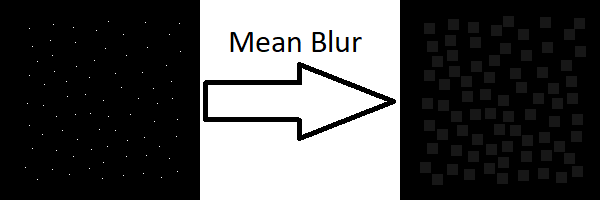

What is a Mean Blur?
A Mean Blur is the simplest type of blur it just takes the arithmetic mean of the surrouding pixels and store's that vlaue at the current pixel. It looks at the pixels in a square surrounding the pixel we are finding the value of this makes it look unnatural so people tend to dislike it but it is very fast to run because it looks in a square. Mean blurs because of this are generally used for preprossesing when remvoing noise rather than when people will actually see the result of the blur.
